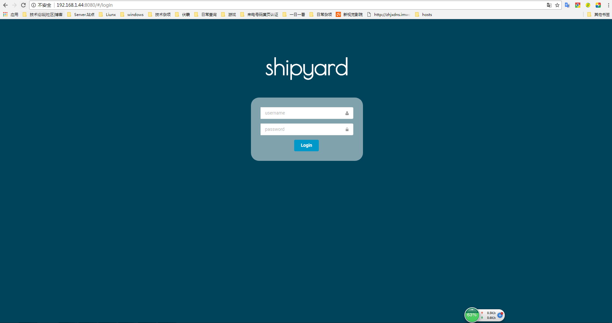
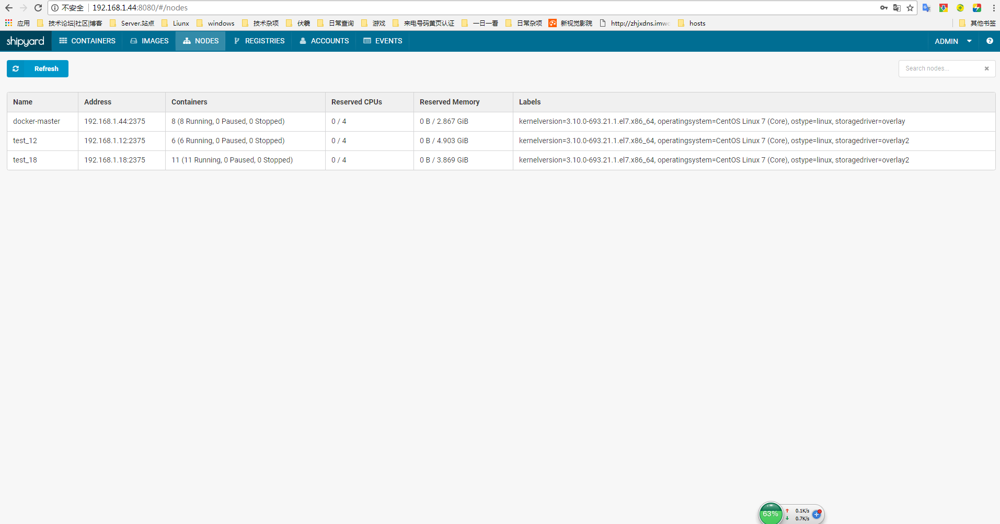
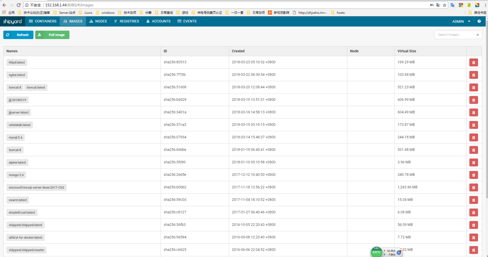

一、 说明
Shipyard部署总体较为简单，有一键部署脚本，只需执行相应命令就可以实现部署，但在部署中还是出现很多问题，主要是shipyard官方网站无法访问，无法使用官方一键脚本部署，使用网上找到的修改版，里面有部分内容有所缺失，现已修改。
二、环境
centos:7.4
master: 192.168.1.44
node1: 192.168.1.12
node2: 192.168.1.18
docker version: docker-ce-18.03.0-ce
三、安装步骤
安装之前需要部署好docker环境
1、master节点执行一件部署命令
1 | 正常直接从官方拉取脚本执行就行了，命令如下 |
执行脚本的时候会自动下载相关镜像，也可以事先下载镜像文件
1 | [root@master ~]# docker pull alpine |
通过访问http://IP：8080登录shipyard,默认帐号密码：admin shipyard

2、分别在node节点执行如下命令，添加节点到shipyard
1 | # 部署机就是master节点 |


四、问题总结
注意项目1：
—————————————————————————————————————
上面安装shipyard的脚本是英文版的，其实还有中文版的脚本，下面两种都可以使用：（两个地址都失效）
1）安装shipyard
1 | curl -sSL http://dockerclub.net/public/script/deploy | bash -s ==> 中文版 |
2）添加node节点
1 | curl -sSL http://dockerclub.net/public/script/deploy | ACTION=node DISCOVERY=etcd://<shipyard部署机ip> bash -s ==> 中文版 |
3）删除shipyard（在节点机上执行，就会将节点从shipyard管理里踢出）
1 | curl http://dockerclub.net/public/script/deploy | ACTION=remove bash -s ==> 中文版 |
—————————————————————————————————————
问题项目2：
—————————————————————————————————————
1）安装shipyard前不需要部署swarm集群，一键包已包含集群建设
2）部署后无法发现节点，容器页面报错，意思是到节点IP:3375端口无法建立连接，500错误；根据排查，发现所有节点swarm_manager容器都没有开启3375端口，于是在脚本里面修改
容器启动命令，添加开启3375端口，具体看下方脚本；
3）在shipyard web页面，master自身发现较慢，不知道什么原因
4）中文版shipard创建容器的时候，设置端口映射但不生效，使用英文版没有问题，未发现问题原因
5）shipyard只适合较小规模docker集群，功能上已跟不上现阶段的docker集群需求。
—————————————————————————————————————
deploy脚本
这个是中文版的脚本，和官方的区别就是修改了shipyard镜像文件，下方标注部分说明
1 |
|